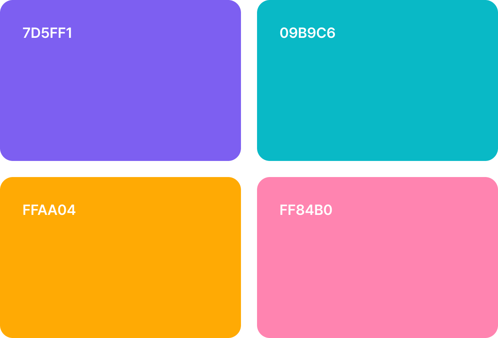
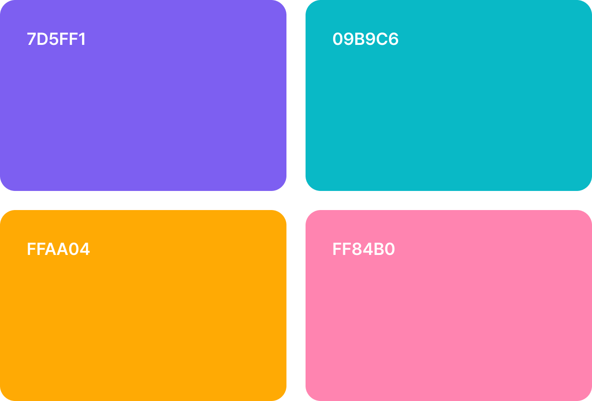

PROJECT GOAL
‘쎄듀런’은 학생이 스스로 영어 실력을 향상시킬 수 있도록 돕는 자기주도형 온라인 학습 플랫폼입니다.
구문, 문법, 어휘 등 각 영역에 최적화된 다양한 영어 학습 액티비티를 통해 자유롭게 커리큘럼을 구성할 수 있습니다.
기존의 불편한 점들을 개선해, 사용자의 학습 성향과 필요에 맞는 정보를 효율적으로 제공하며,
다양한 디바이스와 해상도에 최적화되는 반응형 웹으로 제작되었습니다.
DESIGN CONCEPT
카드형 UI를 기반으로 한 인터페이스 설계로, 시각적으로 명확하게 구별되어 쉽게 정보의 구조를 파악할 수 있도록
제작하였습니다. 또한 컬러를 활용하여 기존 모듈형 UI의 단조로움을 해소하고, 빠른 접근이 가능하도록 구성했습니다.
DESIGN ELEMENTS
 

브랜드 컬러는 핵심정보를 시각적으로 구분하며, 서브 컬러는 보조 정보에 사용했습니다.
Pretendard 폰트를 기반으로 깔끔하고 현대적인 사용자 경험을 제공합니다.
출제 범위, 난이도, 문제 유형을 3단계로 나누어 직관적으로 설정할 수 있도록 UX를 최적화하여,
콘텐츠를 쉽고 빠르게 생성할 수 있도록 설계했습니다.
기존 복잡한 배정 절차를 간소화하고, 학생별/반별 탭을 분리해 사용자 흐름을 단순화하였습니다.
각 학생 정보를 클릭해 수업 클래스를 직관적으로 배정할 수 있고, 검색 및 필터 기능으로 배정을 더욱 빠르게 진행할 수 있습니다.
교사용 학습 관리 시스템의 대시보드를 설계하여, 학습 진행률과 학생 성취 데이터를 직관적으로 확인할 수 있도록 구성했습니다.
복잡한 정보를 시각화하고 핵심만 요약해 보여주는 UI로 교사의 업무 효율성과 사용자 경험을 동시에 개선했습니다.
학습 회차 및 일자에 따라 D-Day, 완료율 등 주요 지표를 시각화하여 학습 현황을 직관적으로 파악할 수 있도록 구성하였습니다.
TR/TEST 유형 및 학습 상태별 컬러 코드를 적용해 사용자 중심의 효율적인 학습 관리가 가능하도록 UI를 설계하였습니다.
학습 수행률 대시보드를 팝업 형식으로 구성해 정보 과밀을 줄이고, 핵심 지표를 직관적인 그래프로
시각화하여 효율적인 피드백이 가능하도록 설계했습니다. AI 분석 리포트와 미이수 리마인드 기능을 통해
학습자의 몰입도와 지속률을 높이는 UX를 구현했습니다.
다양한 문제 유형에 맞춘 입력 방식과 시각적 구조를 통해 학습 몰입도를 높이고 사용자 혼란을 최소화하는 문제풀이 UI를 설계하였습니다.
모바일 친화적인 입력 UX와 직관적인 문제 흐름 설계를 기반으로 자기주도 학습 경험을 유도하였습니다.